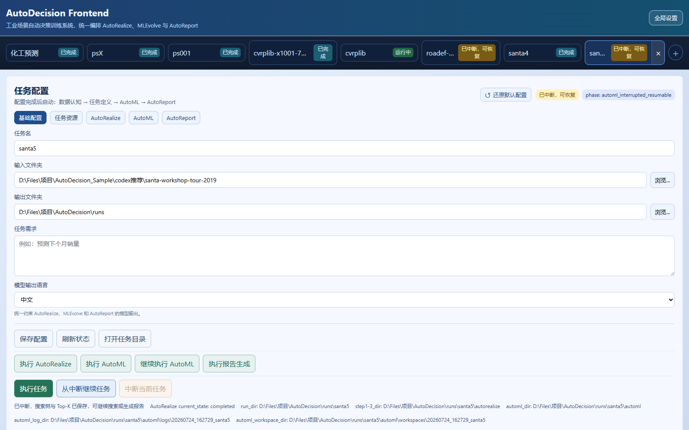
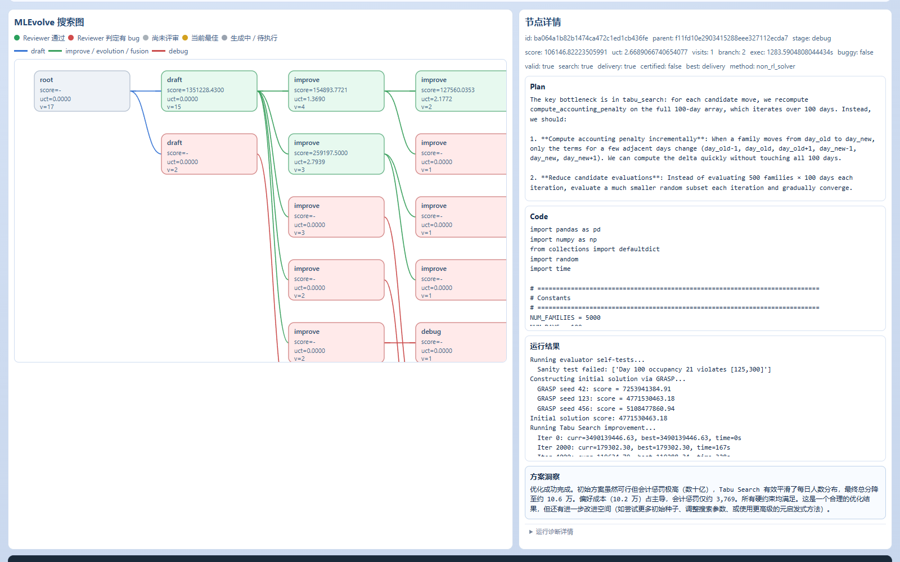

数据能看，不能用
字段、表头、主外键和数据角色缺少文档，数据长期停留在报表和大屏，难以直接进入建模。
把制造企业沉淀的数据、业务目标和硬约束，转化为可验证、可复用、可接入业务系统的预测模型与决策求解器。
不是再做一块看板，也不是让通用大模型直接“猜答案”，而是自动构建、运行、比较并交付真正的小模型与求解代码。
制造企业已积累 MES、ERP、QMS、WMS、设备日志和检测数据，但大量“预测某批次良率”“如何分配订单和车辆”“怎样降低能耗”等长尾问题仍依赖数据科学家、工艺专家和运筹工程师反复沟通。AutoDecision 用一条可追溯流水线完成数据认知、任务定义、方案搜索、代码执行、结果评审和报告交付，让企业从“拥有数据”走向“持续生产决策模型”。
工业问题同时包含杂乱数据、隐含业务口径、物理约束和验收指标。任何一项理解错误，都可能得到“分数很好但生产不可用”的模型。
字段、表头、主外键和数据角色缺少文档，数据长期停留在报表和大屏，难以直接进入建模。
“提升良率”“降低物流成本”需要被翻译为目标、数据切分、硬约束、评价指标与输出格式。
只生成一份代码再反复调试，难以系统比较树模型、时序模型、数学优化、启发式搜索或 RL。
脚本、模型、预处理器与运行口径没有统一接口，业务系统难以重训、推理和追溯。
业务、IT 与算法团队来回解释字段和指标。
清洗、特征、模型、约束与超参逐项开发。
代码依赖个人经验，复现和迁移成本高。
只有头部项目值得投入，大量局部优化机会被放弃。
选择可由历史数据验证、结果可进入现有流程、价值能用质量或成本指标衡量的场景，不从高风险在线控制起步。
在投产、换线或关键工序前，识别高风险批次与关键影响因子，为抽检、参数复核和工艺处置提供依据。
在交付日期、车辆、仓容、产能和合同成本等约束下，为订单、车辆、仓库或供应商生成可执行分配方案。
| 扩展场景 | 问题族 | 关键输出 | 价值口径 | 进入顺序 |
|---|---|---|---|---|
| 设备故障与寿命预测 | Prediction | 故障风险、剩余寿命、告警优先级 | 非计划停机、维修成本 | 第二阶段 |
| 能耗预测与参数寻优 | Prediction + Decision | 能耗基线、参数组合、节能空间 | 单位产量能耗、峰谷成本 | 第二阶段 |
| 车间排产与工序调度 | Decision | 工序顺序、设备分配、完工时间 | 延期、换线、在制品 | 第三阶段 |
| 库存与采购策略 | Prediction + Decision | 需求预测、补货量、安全库存 | 缺货、周转与资金占用 | 第三阶段 |
每一阶段都有机器可读产物，后续系统不依赖聊天记录猜测前文；完整证据保留在本地，需要时按引用取回。
识别文件、表格、字段与关系；通过只读调查确认歧义；生成任务书、评估合同、输出合同与 AutoML 上下文。
生成多类候选代码；执行、预检、Debug、Improve；用搜索树比较预测模型、优化算法、启发式或 RL 路线。
基于已接受节点、代码、指标和产物，解释最佳方案、候选差异、适用边界与复用方式。
通过 manifest 与固定入口重训、预测或求解，接入企业数据流水线和业务审批流程。
以下为本地运行版本实拍。界面可配置任务资源、模型与搜索预算，查看搜索树、节点代码、执行结果和评审结论。


LLM 负责理解、生成和评审；结构化合同、程序执行、确定性检查与统一 evaluator 负责把灵活性约束在可验证边界内。
技术规范书用于定义产品方向，但商业计划不把未经验证的采购指标包装成当前能力。
| 能力 | 当前代码可证实 | 商业化阶段动作 | 状态 |
|---|---|---|---|
| 多源数据认知 | 支持表格、文档、PDF、图片和压缩包；字段画像、关系证据与只读调查 | 增加 MES/ERP/QMS 标准连接器与行业字段词典 | 已实现核心 |
| 预测与决策搜索 | Prediction / Decision、数学优化、启发式、RL/混合方法、Top-K | 形成良率、物流、排产三个行业模板包 | 已实现核心 |
| 安全执行 | 独立子进程、任务工作区、超时、CPU/内存/设备约束与危险调用预检 | 容器隔离、镜像白名单、SBOM、权限审计与渗透测试 | 需产品加固 |
| 恢复与审计 | journal、search state、检查点、Top-K、继续搜索和 LLM 使用记录 | 故障自动拉起、企业告警和集中审计台 | 部分实现 |
| 信创与国产化 | OpenAI-compatible provider，可配置模型与本地 Python 服务 | 完成目标国产 OS、数据库、芯片和大模型的兼容性认证 | 待认证 |
| 在线闭环控制 | 当前定位为离线/准在线辅助决策，输出代码、模型与求解结果 | 经安全评估后接入审批流；高风险控制保留人工确认 | 远期路线 |
每个试点先冻结基线、时间切分、约束和收益口径，再开始搜索；异常高分和不可行方案必须被拒绝。
以下是经营规划假设，不冒充官方行业统计。赛前应使用工信、统计年鉴和客户访谈数据替换企业数量假设。
已建设 MES/ERP/QMS/WMS 等系统，拥有可导出的历史数据；每年存在多个预测或优化需求；当前依赖外包或少数算法人员；愿意以 6-10 周试点验证价值。
业务发起人为质量、生产、设备或供应链负责人；技术把关人为数字化/IT/数据部门；预算批准人为工厂负责人或集团数字化负责人。
用高价值场景试点降低首次采购风险，再把同一客户的第二、第三个问题转化为续费与扩容收入。
6-10 周；包含数据盘点、一个问题定义、候选搜索、验收报告和复用说明。
按环境、并发任务、模型接入和支持等级分层；客户承担或实报实销算力与 LLM 费用。
MES/ERP/QMS/WMS 连接器、行业评估模板、审批流与二次开发，按范围报价。
| 方案类别 | 杂乱数据认知 | 预测 + 决策 | 自动执行比较 | 模型/求解器复用 | 主要短板 |
|---|---|---|---|---|---|
| BI / 数据看板 | 有限 | 弱 | 无 | 无 | 侧重描述过去 |
| 传统 AutoML 平台 | 需宽表 | 预测为主 | 有 | 有 | 问题定义与约束仍依赖专家 |
| 通用代码智能体 | 灵活但不稳定 | 可生成 | 单路线为主 | 需人工整理 | 缺少统一 evaluator 与交付协议 |
| 咨询/定制开发 | 可深度处理 | 可覆盖 | 人工驱动 | 项目制 | 周期长、复制成本高 |
| AutoDecision | 证据化认知 | 统一问题族 | 搜索 + 执行 + Review | 固定接口 + manifest | 仍需产品加固与行业试点 |
不一开始销售“万能工业 AI 平台”，而是销售一个有数据、有基线、有验收口径的明确结果。
数据体检与 ROI 假设：确认数据权属、字段覆盖、业务基线与可验收性。
冻结任务合同：时间切分、指标、约束、输出和人工审批边界。
自动搜索与专家复核：比较多条技术路线，保留 Top-K 和失败证据。
影子运行与验收：接入历史或准实时数据，不直接控制生产，验证业务增益。
质量、设备、供应链部门共同立项，形成可公开或脱敏的行业案例。
与 MES/ERP/WMS 集成商共建连接器，AutoDecision 提供模型工厂能力。
联合验证新算法、行业数据口径与评估协议，增强技术与人才供给。
首场景试点后，按新增数据域、任务并发和行业包扩容，形成年度续费。
先解决可靠交付，再做行业复制，最后建设模型资产治理与伙伴生态。
单位：万元。以下为基准情景规划，不是已签订单；假设客户数、客单价与交付毛利均需由试点数据滚动修正。
| 项目 | 第 1 年 | 第 2 年 | 第 3 年 |
|---|---|---|---|
| 付费客户数 | 4 | 14 | 35 |
| 营业收入 | 120 | 520 | 1260 |
| 交付与算力成本 | 54 | 187 | 378 |
| 毛利润 / 毛利率 | 66 / 55% | 333 / 64% | 882 / 70% |
| 研发、销售与管理费用 | 220 | 410 | 650 |
| 经营利润 | -154 | -77 | 232 |
| 第三年敏感性 | 客户数 | 平均年收入/客户 | 收入 | 解释 |
|---|---|---|---|---|
| 审慎情景 | 25 | 30 万 | 750 万 | 销售周期延长，项目收入占比偏高 |
| 基准情景 | 35 | 36 万 | 1260 万 | 形成 3 个行业模板与稳定续费 |
| 进取情景 | 50 | 40 万 | 2000 万 | 伙伴渠道成熟、跨区域复制顺利 |
融资金额、估值和股权比例必须由创始团队、公司主体与投资人共同确认。本计划只给出资金需求模型。
代码能够证明技术原型，但不能替代团队履历、公司主体、客户背书和知识产权。以下岗位请在提交前补入真实姓名与成果。
制造业客户洞察、战略合作、融资与商业结果负责；优先具备工厂数字化或企业软件经历。
LLM Agent、AutoML、优化/RL、平台架构与研发质量负责；补充论文、开源或工程成果。
将质量、供应链问题冻结为可验收合同，负责数据接入、现场实施和客户成功。
灯塔客户、工业软件集成商、区域渠道和回款负责，建立可复制售前与报价体系。
首期定位为辅助决策：模型给出预测或方案，业务负责人审核后执行；逐步用影子运行和分级权限扩大自动化范围。
风险：工业数据外泄。对策：私有化部署、密钥隔离、最小权限、脱敏、访问审计和本地 artifact。
风险：死循环、危险调用和依赖污染。对策：预检、超时、任务级依赖目录；路线图增加容器与白名单。
风险：泄漏、异常分数或约束遗漏。对策：固定 evaluator、时间外验证、Result Review、硬约束与人工验收。
风险：模型价格、接口或合规变化。对策：OpenAI-compatible 多模型配置、缓存优化、模型角色分工与降级策略。
风险：工业项目决策链长。对策：标准化 100 天试点、按里程碑付款、与集成商联合销售。
风险：每个工厂口径不同。对策：通用引擎与行业合同模板分层，优先复制数据结构相近的场景。
社会价值同样采用可核验指标，不把“绿色、就业、数字化”停留在口号。
以一次合格率、报废返修、库存周转、运输成本和单位能耗衡量实际改善。
降低对完整算法团队的前置要求，让更多细分工厂能验证数据价值。
形成工业数据产品、模型验证、行业交付和 AI 治理等新型岗位，而非简单替代工艺人员。
围绕省内电子制造、装备与物流形成可复制软件能力，提升区域数字化服务供给。
本版本依据本地材料和代码仓库编制。市场与财务数据为规划假设，不能作为已实现业绩或权威统计引用。
| 提交前事项 | 负责人 | 证据 | 当前状态 |
|---|---|---|---|
| 公司与团队信息 | 创始人 | 营业执照、履历、职责、持股 | 待补充 |
| 客户需求验证 | 行业/销售 | 10-20 份访谈纪要、2-3 份意向函 | 待补充 |
| 产品效果验证 | 技术/交付 | 基线、数据切分、指标、约束、复现记录 | 已有原型，待第三方试点 |
| 知识产权与安全 | 技术/法务 | 软著、专利、许可证清单、安全测试 | 待整理/申请 |
| 市场和财务校准 | CEO/财务 | 官方统计、真实报价、人员与算力预算 | 当前为基准假设 |
AutoDecision 寻找电子制造灯塔客户、工业软件集成伙伴和种子轮投资方，共同完成从工程原型到工业级产品的最后一公里。